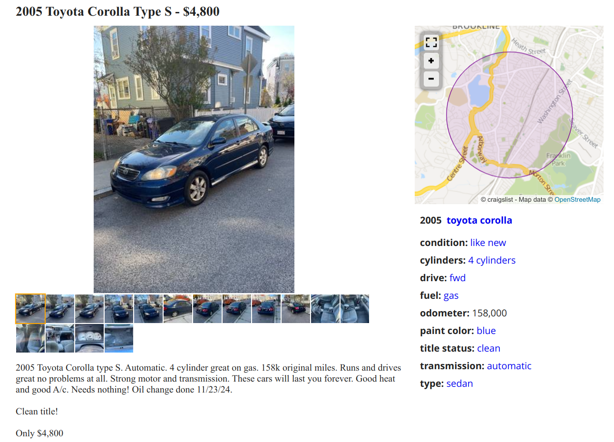

df <- read.csv("toyota-corolla.csv")
cor(df$odometer, df$price)[1] -0.686819
The dataset toyota-corolla.csv contains data from a random sample of advertisements for used Toyota Corolla cars on the website Craigslist, which is the American equivalent of Marktplaats. Here is an example advertisement from the site:

There are 857 observations and 7 variables in the dataset:
price: The asking price in dollars for the car in the advertisement.age: The age of the vehicle in years since its manufacture.odometer: The total number of miles the car has driven in its lifetime. This is usually shown on the car’s dashboard. Note: 1 mile is 1.609344 kilometers.state_ca: A dummy variable that equals 1 if the car advertisement was placed in the state of California and 0 otherwise.state_fl: A dummy variable that equals 1 if the car advertisement was placed in the state of Florida and 0 otherwise.state_ny: A dummy variable that equals 1 if the car advertisement was placed in the state of New York and 0 otherwise.state_tx: A dummy variable that equals 1 if the car advertisement was placed in the state of Texas and 0 otherwise.All the advertisements are from one of California, Florida, New York or Texas.
What is the sample correlation between odometer and price?
df <- read.csv("toyota-corolla.csv")
cor(df$odometer, df$price)[1] -0.686819Answer:
-0.686819.
The sample correlation between age and price is -0.7405305. Choose the answer below which best interprets this correlation.
Answer:
Older cars tend to have smaller asking prices and newer cars tend to have larger asking prices.
Estimate a simple linear regression model with price as the dependent variable and odometer as the independent variable.
Your estimated sample regression intercept should be 17970.519227.
Use this model to answer the following questions.
m1 <- lm(price ~ odometer, data = df)
summary(m1)
Call:
lm(formula = price ~ odometer, data = df)
Residuals:
Min 1Q Median 3Q Max
-17120.5 -1542.1 685.4 2426.3 13298.7
Coefficients:
Estimate Std. Error t value Pr(>|t|)
(Intercept) 17970.519227 276.537183 64.98 <2e-16 ***
odometer -0.085900 0.003109 -27.63 <2e-16 ***
---
Signif. codes: 0 '***' 0.001 '**' 0.01 '*' 0.05 '.' 0.1 ' ' 1
Residual standard error: 3913 on 855 degrees of freedom
Multiple R-squared: 0.4717, Adjusted R-squared: 0.4711
F-statistic: 763.5 on 1 and 855 DF, p-value: < 2.2e-16Choose the answer below which best interprets the sample regression intercept.
Answer:
The predicted asking price of Toyota Corolla that has driven zero miles is $17970.52.
Explanation:
The model is \mathbb{E}\left[price_i|odometer_i\right] = \beta_0 + \beta_1 odometer_i. A Toyota Corolla with zero mileage will have an odometer value of 0. Thus \mathbb{E}\left[price_i|odometer_i=0\right]=\beta_0. The estimate of \beta_0 is therefore our prediction of the asking price when the mileage is zero.
Report the sample regression slope.
Answer:
coef(m1)[["odometer"]][1] -0.08590005Consider two Toyota Corollas, Car A and Car B. Car A has driven 100,000 miles in its lifetime while Car B has driven only 90,000.
According to the model, by how much more is Car B expected to sell for in the market compared to Car A?
In other words, calculate “Predicted asking price car B” - “Predicted asking price car A”.
Answer:
coef(m1)[["odometer"]] * (90000 - 100000)[1] 859.0005Explanation:
The model is \mathbb{E}\left[price_i|odometer_i\right] = \beta_0 + \beta_1 odometer_i. For Car A, we have an expected asking price of \mathbb{E}\left[price_i|odometer_i=100000\right] = \beta_0 + 100000\beta_1 and for Car B, we have an expected asking price of \mathbb{E}\left[price_i|odometer_i=90000\right] = \beta_0 + 90000\beta_1. The difference between the two is therefore:
\begin{split} &\mathbb{E}\left[price_i|odometer_i=90000\right]- \mathbb{E}\left[price_i|odometer_i=100000\right]\\=& \beta_0 + 90000\beta_1-(\beta_0 + 100000\beta_1)\\=& 90000\beta_1-100000\beta_1 \\=& \beta_1\left(90000-100000\right) \end{split}
Run a regression of the squared residuals against odometer to formally test the homoskedasticity assumption in the model. Use a 5% level for the test.
What is the null hypothesis? Choose one of the following options:
What is the p-value of the test?
What is the conclusion of the test? Choose one of the following options:
Answer:
df$e2 <- m1$residuals^2
summary(lm(e2 ~ odometer, data = df))
Call:
lm(formula = e2 ~ odometer, data = df)
Residuals:
Min 1Q Median 3Q Max
-30326577 -15162785 -6539651 1584558 261174843
Coefficients:
Estimate Std. Error t value Pr(>|t|)
(Intercept) 31937335.58 2405035.08 13.279 < 2e-16 ***
odometer -213.96 27.04 -7.913 7.74e-15 ***
---
Signif. codes: 0 '***' 0.001 '**' 0.01 '*' 0.05 '.' 0.1 ' ' 1
Residual standard error: 34030000 on 855 degrees of freedom
Multiple R-squared: 0.06824, Adjusted R-squared: 0.06715
F-statistic: 62.62 on 1 and 855 DF, p-value: 7.745e-15The p-value is 0. - Conclusion: There is sufficient evidence to conclude that there is heteroskedasticity.
Estimate a simple linear regression model with price as the dependent variable and the following two independent variables:
odometerageYour estimated sample regression intercept should be 19089.793448.
Use this model to answer the following questions.
m2 <- lm(price ~ odometer + age, data = df)
summary(m2)
Call:
lm(formula = price ~ odometer + age, data = df)
Residuals:
Min 1Q Median 3Q Max
-15752.2 -953.3 420.7 1638.0 11367.4
Coefficients:
Estimate Std. Error t value Pr(>|t|)
(Intercept) 19089.793448 237.822351 80.27 <2e-16 ***
odometer -0.046291 0.003303 -14.01 <2e-16 ***
age -578.251592 29.874177 -19.36 <2e-16 ***
---
Signif. codes: 0 '***' 0.001 '**' 0.01 '*' 0.05 '.' 0.1 ' ' 1
Residual standard error: 3264 on 854 degrees of freedom
Multiple R-squared: 0.6328, Adjusted R-squared: 0.632
F-statistic: 735.9 on 2 and 854 DF, p-value: < 2.2e-16Holding the odometer reading fixed, according to the model by how much more does a one-year younger Toyota Corolla on average sell for on the market?
Answer:
- coef(m2)["age"] age
578.2516 Provide a 99% confidence interval for the estimated coefficient on odometer:
Answer:
confint(m2, parm = "odometer", level = 0.99) 0.5 % 99.5 %
odometer -0.05481931 -0.03776273Perform an appropriate hypothesis test to test the usefulness of the model. Use a 5% significance level.
Answer:
summary() output (735.89) or obtained directly with:summary(m2)$fstatistic value numdf dendf
735.8914 2.0000 854.0000 qf(0.95, 2, 854)[1] 3.006266where the numerator and denominator degrees of freedom (2 and 854) can be read from the last line of the summary() output, the command summary(m2)$fstatistic, or calculated directly (k=2 variables and n-k-1=857-2-1=854).
Use the model to test the following claim at the 5% level using a p-value approach:
“Holding the age of a Toyota Corolla fixed, each additional mile driven on average decreases the market value of a Toyota Corolla by more than 4 cents ($0.04).”
Perform this test by answering the questions below.
What is the null hypothesis? \beta_1 </\leq/>/\geq/=/\neq \underline{\hspace{20mm}} (choose one comparison operator and fill in a value in the blank).
What is the alternative hypothesis? \beta_1 </\leq/>/\geq/=/\neq \underline{\hspace{20mm}} (choose one comparison operator and fill in a value in the blank).
Under the null hypothesis, the test statistic T=(B_1-b)/S_{B_1}, where b is the hinge, follows a t distribution with how many degrees of freedom? \underline{\hspace{20mm}}
What is the value of the test statistic? \underline{\hspace{20mm}}
What is the associated p-value? \underline{\hspace{20mm}}
What is your conclusion? Choose an option below:
Answer:
b_1 <- coef(summary(m2))["odometer", "Estimate"]
s_b_1 <- coef(summary(m2))["odometer", "Std. Error"]
t <- (b_1 + 0.04) / s_b_1
t[1] -1.904355pt(t, m2$df.residual)[1] 0.02859986Estimate a simple linear regression model with price as the dependent variable and the following three independent variables:
odometerageodometer and age.Your estimated sample regression intercept should be 20541.174993.
Use this model to answer the following questions.
m3 <- lm(price ~ odometer * age, data = df)
summary(m3)
Call:
lm(formula = price ~ odometer * age, data = df)
Residuals:
Min 1Q Median 3Q Max
-16242.4 -794.4 373.2 1597.4 11261.3
Coefficients:
Estimate Std. Error t value Pr(>|t|)
(Intercept) 20541.174993 328.060378 62.614 < 2e-16 ***
odometer -0.068901 0.004840 -14.235 < 2e-16 ***
age -856.224737 53.069730 -16.134 < 2e-16 ***
odometer:age 0.003364 0.000536 6.275 0.000000000555 ***
---
Signif. codes: 0 '***' 0.001 '**' 0.01 '*' 0.05 '.' 0.1 ' ' 1
Residual standard error: 3193 on 853 degrees of freedom
Multiple R-squared: 0.649, Adjusted R-squared: 0.6478
F-statistic: 525.8 on 3 and 853 DF, p-value: < 2.2e-16Report the estimated coefficient on the interaction term.
Answer:
coef(m3)[4]odometer:age
0.003363627 According to the model, what is the average impact of driving one additional mile on the resale price for new cars (cars with age zero)?
That is, when age equals zero, what is the expected change in the selling price when odometer increases by one unit?
Answer:
coef(m3)["odometer"] odometer
-0.06890122 Explanation:
The model is: \mathbb{E}\left[price_i|odometer_i,age_i\right]=\beta_0 + \beta_1 odometer_i + \beta_2 age_i + \beta_3 odometer_i age_i For cars with age zero, the model becomes: \mathbb{E}\left[price_i|odometer_i,age_i=0\right]=\beta_0 + \beta_1 odometer_i + \beta_2 \times 0 + \beta_3 odometer_i \times 0 = \beta_0 + \beta_1 odometer_i Therefore increasing the mileage by one unit will have an expected impact of \beta_1, which is estimated to be -0.0689 dollars (a reduction in 6.89 cents).
According to the model, what is the average impact of driving one additional mile on the resale price for cars that are 10 years old (cars with age 10).
That is, when age equals ten, what is the expected change in the selling price when odometer increases by one unit?
Answer:
coef(m3)["odometer"] + coef(m3)["odometer:age"] * 10 odometer
-0.03526495 Explanation:
The model is: \mathbb{E}\left[price_i|odometer_i,age_i\right]=\beta_0 + \beta_1 odometer_i + \beta_2 age_i + \beta_3 odometer_i age_i For cars with age ten, the model becomes: \begin{split}\mathbb{E}\left[price_i|odometer_i,age_i=10\right]&=\beta_0 + \beta_1 odometer_i + \beta_2 \times 10 + \beta_3 odometer_i \times 10 \\&= \beta_0 + \beta_1 odometer_i + 10\beta_2 + 10\beta_3 odometer_i\\&= \left(\beta_0 + 10\beta_2\right) + \left(\beta_1 +10\beta_3\right)odometer_i \end{split} Therefore increasing the mileage by one unit will have an expected impact of \beta_1+10\beta_3, which is estimated to be -0.0352 dollars (a reduction in 3.52 cents).
Choose the answer below which best interprets the model estimates:
Answer:
For new cars, driving one additional mile has a bigger effect on the car’s depreciation compared to old cars.
Explanation:
The previous 2 questions showed that for new cars, one additional mile reduced the value by on average 6.9 cents, whereas for ten-year-old cars, this was only 3.5 cents. So one additional mile has a bigger effect on the car’s depreciation for new cars compared to old cars.
Estimate a simple linear regression model with price as the dependent variable and the following five independent variables:
odometeragestate_flstate_nystate_txYour estimated sample regression intercept should be 20106.250435.
Use this model to answer the following questions.
m4 <- lm(price ~ odometer + age + state_fl + state_ny + state_tx, data = df)
summary(m4)
Call:
lm(formula = price ~ odometer + age + state_fl + state_ny + state_tx,
data = df)
Residuals:
Min 1Q Median 3Q Max
-14734.1 -918.8 404.4 1744.8 10373.8
Coefficients:
Estimate Std. Error t value Pr(>|t|)
(Intercept) 20106.250435 264.744313 75.946 < 2e-16 ***
odometer -0.046084 0.003208 -14.366 < 2e-16 ***
age -594.843361 29.393528 -20.237 < 2e-16 ***
state_fl -1670.793437 256.274366 -6.520 0.000000000121 ***
state_ny -1060.337181 359.599538 -2.949 0.00328 **
state_tx -2006.696530 328.732687 -6.104 0.000000001567 ***
---
Signif. codes: 0 '***' 0.001 '**' 0.01 '*' 0.05 '.' 0.1 ' ' 1
Residual standard error: 3159 on 851 degrees of freedom
Multiple R-squared: 0.6573, Adjusted R-squared: 0.6553
F-statistic: 326.5 on 5 and 851 DF, p-value: < 2.2e-16Which variables are individually statistically significant at the 1% level?
Answer:
All 5 variables. All have p-values below 0.01.
For a given mileage and age, Toyota Corollas on average sell for how much more in New York compared to Texas?
Answer:
coef(m4)["state_ny"] - coef(m4)["state_tx"]state_ny
946.3593 Toyota Corollas of a given mileage and age on average sell for $946.36 more in New York comapred to Texas.
Explanation: In New York, the model is: \begin{split} &\mathbb{E}\left[price_i|odometer_i,age_i,state\_fl_i=0,state\_ny_i=1,state\_tx_i=0\right]\\&=\beta_0 + \beta_1 odometer_i + \beta_2 age_i +\beta_3\times0+\beta_4\times1+\beta_5\times0 \\&=\beta_0 + \beta_1 odometer_i + \beta_2 age_i+ \beta_4\\ \end{split} In Texas, the model is: \begin{split} &\mathbb{E}\left[price_i|odometer_i,age_i,state\_fl_i=0,state\_ny_i=0,state\_tx_i=1\right]\\&=\beta_0 + \beta_1 odometer_i + \beta_2 age_i +\beta_3\times0+\beta_4\times0+\beta_5\times1 \\&=\beta_0 + \beta_1 odometer_i + \beta_2 age_i+ \beta_5\\ \end{split} The difference is \beta_4-\beta_5.
Provide an interval that contains with 95% probability the asking price of a 10-year-old Toyota Corolla in Texas with 100,000 miles on its odometer.
df_p <- data.frame(age = 10, odometer = 100000, state_fl = 0,
state_ny = 0, state_tx = 1)
predict(m4, df_p, interval = "prediction", level = 0.95) fit lwr upr
1 7542.682 1314.737 13770.63The prediction is $7,542.68. The lower bound is $1,314.74. The upper bound is $13,770.63.
Test the joint usefulness of the state dummy variabes, which are variables 3-5 in your the model. Use a 5% significance level.
Choose one of the options in italics and fill in the blanks.
The test statistic is of the form: \frac{\frac{SSE_r - SSE_c}{a}}{\frac{SSE_c}{n-k-1}}
What is the value of a in the test? \rule{1cm}{0.15mm}
What is the value of the test statistic? \rule{1cm}{0.15mm}
What is the critical value? \rule{1cm}{0.15mm}
Which of the 4 options below is the correct conclusion from the test?
Answer:
We can perform the partial F test by using the anova() function with the reduced model (odometer and age only) and the complete model (odometer, age and the state dummies). The reduced model is actually just model 2 from earlier, so there is no need to estiamte it again.
anova(m2, m4)Analysis of Variance Table
Model 1: price ~ odometer + age
Model 2: price ~ odometer + age + state_fl + state_ny + state_tx
Res.Df RSS Df Sum of Sq F Pr(>F)
1 854 9099709729
2 851 8491795514 3 607914215 20.307 0.000000000001023 ***
---
Signif. codes: 0 '***' 0.001 '**' 0.01 '*' 0.05 '.' 0.1 ' ' 1We now have everything to answer the questions:
qf(0.95, 3, 851)[1] 2.615365